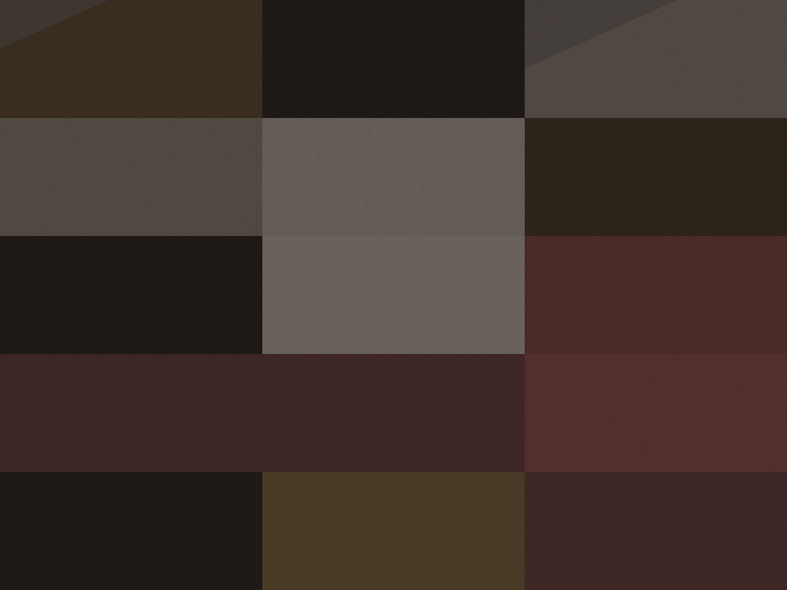

Pão de fermentação natural
Manteiga de leite de cabra batida na hora, flor de sal e azeite de oliva do Alentejo.
R$ 18
Oito rótulos abertos por taça
A carta muda quando a garrafa acaba, não quando vira o mês. Taça de 120 ml medida no balcão, garrafa na mesa e rolha liberada por R$ 45.
Terça a sábado, 17h30. Quinta tem degustação guiada às 19h, seis lugares.

Oito rótulos abertos nesta semana. A carta é impressa toda quinta e reimpressa quando alguma garrafa acaba no meio da semana.
Blanc de Blancs Nature
Casa Venturini · Pinto Bandeira, RS · Chardonnay · 2019
Espumante de método tradicional, seis anos de cave. Bolha fina e final de pão torrado.
R$ 38taça
R$ 240garrafa
Soave Classico
Fattoria Salvi · Vêneto, Itália · Garganega · 2021
Seco, com amêndoa amarga no fim. O branco que a gente abre quando chega mesa pedindo peixe.
R$ 36taça
R$ 208garrafa
Rosé de Lagoa
Quinta do Barrocal · Lisboa, Portugal · Touriga Nacional · 2022
Salmão claro, acidez de limão e um toque de casca. Servido a 10 °C no copo de vinho branco.
R$ 34taça
R$ 186garrafa
Baga de Bairrada
Adega do Vale · Bairrada, Portugal · Baga · 2018
Aberto a taça, nunca a garrafa inteira: tanino firme e nariz de cereja em compota.
R$ 44taça
R$ 268garrafa
Beaujolais-Villages
Domaine Chavanne · Beaujolais, França · Gamay · 2021
Leve, gelado a 14 °C, sem madeira. Vai bem com a tábua inteira e com quem acha tinto pesado.
R$ 36taça
R$ 198garrafa
Mencía de Outeiro
Bodega Outeiro · Bierzo, Espanha · Mencía · 2021
Floral, pimenta branca e fruta escura. O rótulo que mais sai nas quintas de degustação.
R$ 42taça
R$ 246garrafa
Nero d'Avola
Cantina Rizzo · Vittoria, Sicília · Nero d'Avola · 2020
Certo para o presunto de 18 meses: tanino macio, fruta madura e final de erva.
R$ 40taça
R$ 228garrafa
Malbec de Uco
Finca Los Álamos · Vale de Uco, Mendoza · Malbec · 2020
Aberto na quinta e servido até acabar. Escuro, com violeta e cacau, pede carne na brasa.
R$ 38taça
R$ 214garrafa
Vinho quente? Nenhum rótulo aqui passa de 17 °C. A temperatura da sala é 22 °C e as garrafas abertas ficam em balde com gelo e água.
Cozinha de fogão elétrico e uma tábua de frios. Nada sai depois das 23h30, porque o último pedido é às 23h15.
Manteiga de leite de cabra batida na hora, flor de sal e azeite de oliva do Alentejo.
R$ 18
Feita aqui em azeite com louro e pimenta-do-reino. Vai com torrada quente e limão siciliano.
R$ 34
Quatro unidades, casquinha fina e recheio de bechamel com presunto cru. Fritura por imersão a 180 °C.
R$ 28
Mel de laranjeira, nozes tostadas e pimenta-rosa. Meia cura, textura ainda macia no centro.
R$ 38
Sessenta gramas cortadas na faca, na frente de quem pediu. Servido com pão e azeite, sem melão.
R$ 46
Marinadas com casca de laranja, erva-doce e alho laminado. A tigela volta para a cozinha cheia de caroço.
R$ 22
“Perguntei por um branco seco e saí com um Soave por taça. A Tâmara abriu a garrafa na minha frente e explicou de onde vinha a amêndoa do final.” Renata Kimura, senta no balcão às quintas desde 2022
Quatro regras que valem para toda mesa, escritas na parede ao lado do balcão desde o primeiro dia.
Medida
Medida no balcão, na sua frente, com o dosador. Se o rótulo é caro, a taça continua sendo 120 ml.
Rolha
Duas taças de cristal, saca-rolha e balde vão para a mesa. O valor não muda se a garrafa for de guarda.
Tempo
Não existe segunda sessão nem tempo de mesa. Sexta e sábado, a espera média é de vinte minutos.
Quinta
Seis lugares, três taças, R$ 62. A Tâmara escolhe os rótulos na hora, a partir do que está aberto.
Oito lugares, uma mesa só, reservada por formulário ou telefone até as 18h do mesmo dia. Grupos menores entram por ordem de chegada.
Meia quadra da Fradique Coutinho, com a porta estreita e o letreiro pequeno. Quem passa não vê a sala — só o balcão de mármore pela janela.
Rua Artur de Azevedo, 1.886 — Pinheiros, São Paulo.
Metrô Fradique Coutinho a 400 m. Sem estacionamento; há um estacionamento rotativo na
Teodoro Sampaio, 1.900.
| Dia | Salão | Cozinha até |
|---|---|---|
| Terça a quinta | 17h30 às 0h | 23h15 |
| Sexta e sábado | 17h30 às 1h | 23h45 |
| Domingo e segunda | fechado | — |